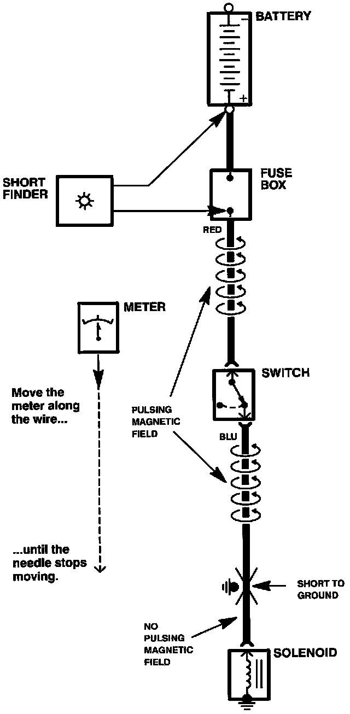

Testing For a Short to Ground With a Short Circuit Locator
Testing For a Short with A Short Circuit Locator (Short Finder):

1. Remove the blown fuse. Leave the battery connected.
2. Connect the short finder across the battery terminals and the load (component) side of the fuse terminal.
3. Close all switches in the circuit you're testing.
4. Turn on the short finder. This creates a pulsing magnetic field around the wiring between the fuse box and the short.
5. Beginning at the fuse box, slowly move the short finder along the circuit wiring. The meter will show current pulses through sheet metal and body trim. As long as the meter is between the fuse and the short, the needle will move with each current pulse. Once you move the meter past the point of the short, the needle will stop moving. Check the wiring and connectors in this area to locate the cause of the short.